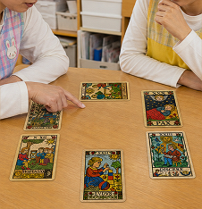

>>> 説明を開く 【概要】「保育活動時の子ども達の状態を6方向から可視化し、次の活動のヒントを示すツール」 【用途】 月案・週案・活動案等 → 保育計画で、活動の方向性を考える材料に。 園内研修・チーム間共有・主任へ相談・個人経過記録等 → 活動の偏りや見落とし確認。保育観を共有するための言語化。子どもの欲求・ズレ・安全性を整理。 【特徴】占い感覚で使えます。が、内容は専門的で、保育士や幼稚園の先生にとって気付きや学びになります。AIが気分で適当に答えないよう、理論・数値・計算で制御し、AIへ事前知識なしに、保育や発達心理の専門的な内容を高い精度で出力させます。 >>> 説明を開く
【最小動作】…黄色の印の年齢・月、活動プリセット、カードをひくボタンの3つでプロンプト生成。）
位相: 0Color: #FF0000
ポジション重み
正逆位置係数
β (pos緩和)：
λ (CHE影響)：
温度：
Wpr：
Wab：
Wla：